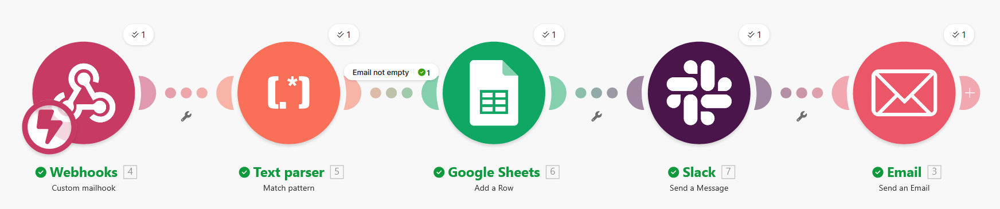
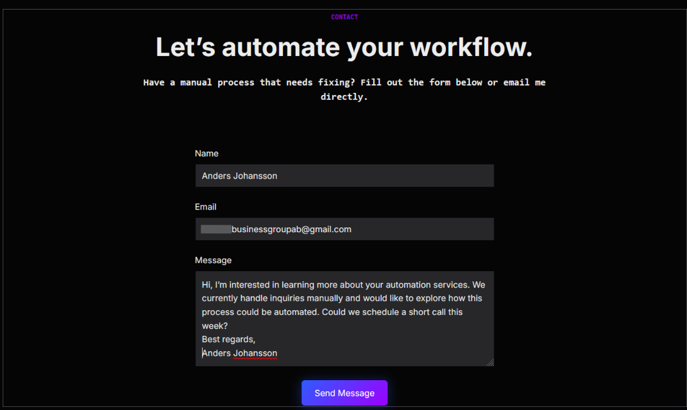
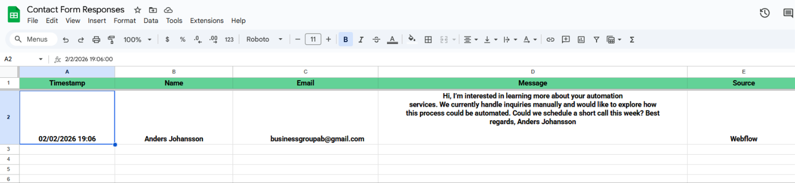
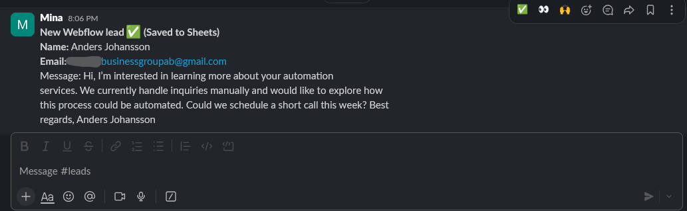

Automation Engine
Make.com scenario
The workflow starts from a Webflow webhook, parses the input, writes a clean lead into Google Sheets, then alerts Slack and sends the email reply.
A fully automated pipeline that captures every inbound lead, standardizes the data, stores it instantly, and replies to the client — all in under 10 seconds.
For small and medium businesses, slow response times directly cost revenue. Every manual step is a potential failure point — and most failures happen invisibly.
From messy inbox logic to a scalable, self-healing automation system.
The workflow triggers the moment a form is submitted and completes the full cycle — capture, store, notify, reply — without any human input.
Three engineering principles keep the system fast, cost-efficient, and self-healing — even when something goes wrong.
Spam and empty submissions are filtered at the first step — before consuming any operations. Saves up to 30% of monthly automation costs.
Emails and fields are normalized before storage. Prevents duplicate records and keeps the CRM clean from day one.
If any step fails, an alert fires instantly to a dedicated Slack channel — so the team reacts before the lead notices anything went wrong.
These screenshots show the real workflow in action: the Webflow form, the Make.com scenario, the stored Google Sheets record, and the Slack team alert.

The workflow starts from a Webflow webhook, parses the input, writes a clean lead into Google Sheets, then alerts Slack and sends the email reply.

A simple front-end contact form captures the lead and starts the automation immediately.

The submission is stored instantly with timestamp, contact details, message, and source.

The team receives a real-time lead notification as soon as the record is saved.
Estimated results for a team processing 40 inbound leads per month — with zero additional infrastructure.
This system doesn't just speed things up — it removes entire categories of risk and manual work from the process permanently.
Every tool was selected as best-in-class for its role. No-code where possible, dependable where it matters.
Stop losing leads to manual work and slow replies. Let's design a system that runs itself.